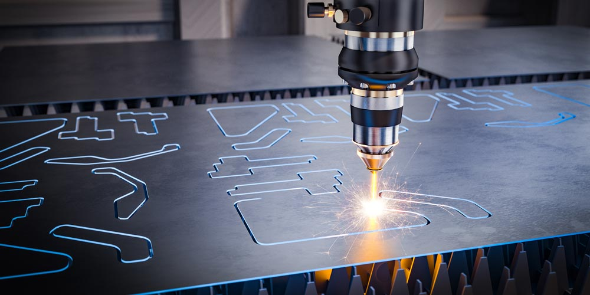

Day 5 – Laser Cutting: CO3 Template Validation¶
Course Overview¶
Today I use laser cutting to create a full-scale cardboard template of the CO3 nameplate. This validates dimensions and proportions before committing to expensive walnut CNC milling.
CO3 Project: Laser-Cut Validation Template¶
Objective¶
Create an accurate 1:1 scale template of the CO3 nameplate oval outline to: - Verify overall dimensions (150mm x 90mm) - Test visual proportions and aesthetics - Validate letter spacing and sizing - Ensure design looks correct at actual size - Practice file preparation for laser cutting
Why Create a Template First?¶
Prototype Before Production
Cardboard laser cutting takes 2 minutes and costs $0.50. CNC milling walnut takes 45 minutes and uses $20 material. Testing first prevents expensive mistakes!

Laser Cutting Principles Applied to CO3¶
File Preparation: CO3 Oval Template¶
Step 1: Export DXF from FreeCAD
1. Opened CO3 nameplate CAD model
2. Created new sketch on XY plane
3. Projected outer oval outline only
4. File → Export → DXF format
5. Saved as: CO3_Oval_Outline.dxf
Step 2: Import into Laser Software 1. Imported DXF into Lightburn 2. Verified dimensions: 150mm x 90mm ✓ 3. Set stroke color to RED (cut line) 4. Positioned in laser bed center
Computer-Aided Design and Digital Fabrication Using Laser Cutter¶
CO3 Template Fabrication Workflow¶
Objective: Create 1:1 scale cardboard template to validate CO3 oval dimensions and proportions before expensive walnut CNC milling.
Material: 3mm corrugated cardboard Time: ~2 minutes Cost: ~$0.50
Machine Used & Materials¶
Laser Cutting Machine: - Type: CO₂ Laser Cutter (40-60W) - Bed size: 300mm x 400mm - Software: Lightburn / RDWorks
Material for CO3 Template:
| Material | Thickness | Purpose | Notes |
|---|---|---|---|
| Cardboard | 3 mm | Validation template | Fast, cheap, perfect for testing |
Future reference: Final CO3 will be CNC milled from walnut on Day 7
 CO₂ Laser cutter used for precise cutting of the cardboard template
{kind=link}
Laser Cutting Parameters for CO3 Template¶
| Parameter | Setting | Reason |
|---|---|---|
| Speed | 25 mm/s | Optimal for clean cardboard cuts |
| Power | 60% | Sufficient for 3mm cardboard |
| Passes | 1 | Single pass cuts through easily |
| Focus | Set to material surface | Critical for clean edges |
| Air Assist | ON | Prevents charring/burning |
Safety Precautions¶
✓ Critical Safety for CO3 Template Cut:
- Never leave laser cutter unattended during operation
- Ensured proper ventilation ON
- Identified emergency stop button location
- Kept fire extinguisher nearby
- Removed flammable materials from area
- Wore safety glasses as required
- Instructor supervision present
Laser Cutting Process: CO3 Template¶
Step-by-Step Execution¶
1. Material Preparation - Placed 3mm cardboard flat on laser bed - Ensured no warping or curling - Checked material was secure
2. Focus Adjustment - Set laser focal point to cardboard surface - Used focus tool for proper distance - Verified focus was sharp
3. Test Cut - Cut small 10mm circle in corner first - Verified power setting cut completely through - Confirmed no burning or incomplete cuts
4. Final CO3 Template Cut - Sent job to laser cutter - Monitored entire 90-second cut - Observed smooth oval cutting - Removed template carefully from bed
Result: Perfect 150mm x 90mm oval template! ✓
Template Validation Results¶
Dimensional Verification¶
Measurements with Digital Calipers: - Width: 149.8mm (target: 150mm) ✓ - Height: 89.9mm (target: 90mm) ✓ - Variance: Within 0.2mm tolerance - Kerf effect: ~0.1mm per side (expected)
Visual Assessment¶
Proportion Testing: - Held template at viewing distance - Oval shape perfectly smooth and balanced - Width-to-height ratio looks correct - Border width adequate for letters
Letter Position Mockup: - Sketched C, O, 3 positions on cardboard with pencil - 5mm spacing between letters confirmed visually - All letters fit comfortably within oval - No crowding at top or bottom - Alignment looks centered
Design Validation Checklist¶
- Overall dimensions correct (150mm x 90mm)
- Oval proportions visually pleasing
- Letter sizes appropriate for space
- Letter spacing (5mm) works well
- Border width (12mm minimum) adequate
- Ready to proceed with 3D prototype
- Confident for final walnut CNC milling
Understanding Kerf¶
Kerf is the material width removed by the laser beam.
For CO3 Template: - Kerf width: ~0.2mm for cardboard - Effect on 150mm oval: negligible (-0.1mm per side) - Template slightly smaller than drawn line (expected)
Important for Future: - CNC milling: Must account for bit diameter in CAM - 4mm end mill removes 4mm width - Toolpath center vs. edge matters - Will address in Day 7 CAM programming
2D Fabrication Strategy: Laser vs. CNC¶
What Laser Cutting Provides¶
Advantages for Templates: - Extremely fast (90 seconds vs. 45 minutes CNC) - Very low cost for testing - Perfectly smooth curves - No tool wear - Ideal for validation mockups
Limitations: - Cannot create depth (2D only) - No 3D features possible - Limited to through-cuts - Material restrictions
Why CNC Still Needed for Final CO3¶
The CO3 nameplate requires: - 4mm deep carved letters (laser can't do depth) - Hardwood walnut material (better than cardboard laser can cut) - Smooth carved walls (end mill finish) - Professional three-dimensional appearance
 Carving Letters: Highlighting tool radius, carving depth, and geometry optimized for CNC milling - the CO3 design showing letter geometry that respects toolpaths and router constraints
Carving Letters: Highlighting tool radius, carving depth, and geometry optimized for CNC milling - the CO3 design showing letter geometry that respects toolpaths and router constraints
Conclusion: Laser validated design quickly and cheaply. CNC will create the final professional piece.
Key Lessons: Toolpath Strategies¶
File Preparation Best Practices¶
DXF Export Checklist: - ✓ All curves converted to vectors - ✓ No duplicate lines - ✓ Closed paths verified - ✓ Correct units (millimeters) - ✓ Layer organization (cut vs. engrave)
Assembly Methods Explored¶
While CO3 is a single-piece nameplate, laser cutting taught me about: - Slot and Tab: Interlocking assembly - Press-Fit: Friction-based joints - Finger Joints: Strong box construction - Fasteners: Through-holes for screws
These techniques will be valuable for future projects requiring assembly.
Reflection: Day 5 Achievements¶
What I Accomplished¶
Today I successfully: - Prepared accurate DXF file from CAD model - Set up and operated CO₂ laser cutter safely - Cut precise cardboard template in under 2 minutes - Validated CO3 dimensions at full scale - Confirmed design proportions and aesthetics - Built confidence for final fabrication
The Value of Rapid Prototyping¶
Prototyping Prevents Costly Mistakes
Cost comparison: - Cardboard template: $0.50 + 2 minutes - Walnut CNC mistake: $20 + 45 minutes + frustration
Testing first saved both money and material!
Laser Cutting vs. CNC Milling¶
| Aspect | Laser Cutting | CNC Milling (Day 7) |
|---|---|---|
| Speed | Very fast (seconds) | Slower (minutes-hours) |
| Depth | 2D through-cut only | Variable depth control ✓ |
| Materials | Cardboard, thin wood, acrylic | Hardwood, metal, thick materials ✓ |
| Finish | Burned edges | Smooth milled surface ✓ |
| Cost/Speed | Excellent for templates | Better for final pieces |
| Best For | Validation, 2D profiles | Final production, 3D features ✓ |
Critical Insights¶
- Physical validation beats digital - Seeing actual size revealed proportions CAD doesn't convey
- Cheap tests prevent expensive failures - $0.50 cardboard vs. $20 walnut
- Kerf matters in precision work - Must account for material removal
- Right tool for the job - Each method has optimal applications
- Safety is non-negotiable - Laser requires constant supervision
Next Steps for Day 6¶
Tomorrow I will: - 3D print complete CO3 nameplate prototype in PLA - Test 4mm letter carving depth effectiveness - Evaluate 3D visual impact of carved letters - Identify any final design refinements needed - Practice 3D printing workflow (CAD → Slicer → Print) - Prepare mentally for final walnut CNC on Day 7
Status: CO3 project is on track! Design validated. Ready for prototype.